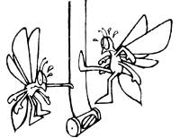
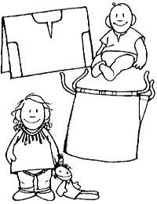

"Want some excellent-and free-garden mulch?" asks Jackson, Ohio's George W. Clark. "Then keep your eye on the weather during haying season. A good rainstorm will probably ruin any bales that unfortunate farmers leave in their fields. And chances are that the weather-cursed folks will give the drenched hay to you . . . just for the effort of hauling it away."
Birds won't snatch all the goodies out of your fruit tree if you try this arboreal "scarecrow" idea from Steve Phipps of DeSoto, Missouri.
Just drape a toy rubber snake from a likely limb of your apple, cherry, or whatever... and those flying fruitpickers will stay far, far away. "It really works!" Steve says.
Jan and Gary Worthington have that all-too-common summer problem: a reservoir that occasionally runs dry. To help conserve the scarce liquid, the Fayetteville, West Virginians run their clothes washer on half its normal supply of water!
The Worthingtons set a large washtub on a high platform next to the mechanical cleaner. Then-right at the end of each rinse cycle-they stop the washer, unhook the far clamp on the machine's drain hose, and place the tube's end in their elevated container. When the machine is turned back on, the washer promptly pumps the used rinse water into their tin tub.
Then Jan and Gary remove the clean garments, put in the next set of grubby apparel, and siphon the leftover rinse water from the tub back into the washer . . . to start another cycle. This way, each batch of clothes is rinsed in clean liquid, yet only one machineful of "new" water is required for each washload!
OK folks, we know that your gardens are probably yielding so much produce that the broccoli needs dinner reservations ... and your green beans have to wait in line just to get into the kitchen! So we're going to go out of our way and share nine-that's right, nine-helpful pieces of food-storing lore. The first three ideas come from readers whose shortcuts really help them stock up in bulk:
[1] Sheri Bickel of Fayetteville, Arkansas blanches bushel-basket quantities of greens, corn, or string beans at one time. She simply throws the food loads in her dishwasher, sets the machine on scald (don't add detergent, please!), and lets the hot water cycle of that washer get her veggies ready for preserving. "They turn out great!" Sheri says.
[2] Think that's something? Well, Sharon Griggs can cold-pack process three or four canner loads of tomatoes ... in one pot! This Dowagiac, Michigan native takes one of those old-fashioned elliptical wash boilers (not a tin washtub), lines the bottom of the large clothes cleaner with old towels, sets it over two burners on her stove, puts in lots of water and filled jars . . . and starts acookin'!
Sharon also freezes huge quantities of edibles-using only a few store-bought containers-by taking the solidly iced food blocks out of her soft plastic freezer boxes . . . and storing all the "cubes" of one kind together in big plastic bags. She can then reuse the expensive containers over and over again.
[3] It looks like Valerie Hannay of Van Buren, Arkansas has discovered the perfect storage container for half-quart food jars: liquor boxes! The cardboard packages that fifths of booze are shipped in (free for the asking at any alcohol outlet) have built-in, pint-sized dividers. And if you place small cardboard squares on top of the "preserves" stored in the bottom of these handy containers, you can stack your jars two layers deep! The result: food bottles that don't get broken, sun-bleached, or dust-covered ... packed in sturdy boxes you can store anywhere!
The next three suggestions should help you "stockpile" your corn harvest:
[1] If you find that cutting all those plump kernels oft the cob is a slippery task, take a tip from Alyne Lawson (of Ore City, Texas) and simply stand each shucked ear in the hole of a stem cakepan while you work. The opening will hold the cob securely, the pan will catch all the kernels ... and in no time-with no mess or waste-your corn-cutting chore will be done.
[2] But what if-try as you may-you can't keep pace with your rapidly ripening maize . . . and some of your sweet ears get tough and starchy? Freeze the kernels anyway, says Sharon Griggs (a lady who's loaded with practical lore). The old gleanings may not have much flavor "straight", but they'll taste just fine and dandy in soups. Ms. Griggs also combines a cup of the thawed kernels with an equal amount of water, one tablespoon of cornstarch, a dash of salt, and sweetener (to taste) . . . then whizzes the ingredients together in her blender. The Michigander cooks the mix till it bubbles ... and eats good-tasting cream-style corn!
[3] Peter Burkard gets even more goodies out of his Sarasota, Florida corn patch: He harvests the tiny leftover ears that always seem to spring up-too late to be pollinated-on the bottom of cornstalks. Pete then pickles the rejected "cornlings" just like cucumbers or okra (or simply refrigerates a few-in vinegar-for several weeks) and ends up with tasty little pickled cobs . . . the exact same treats that sell for outrageous prices in stores.
Our last trio of food-storing ideas make up the "don't fit into a group" group:
[1] When you've finally eaten, canned, and frozen more green beans than you think you'll ever be able to use, don't rototill the rest of your crop back into the soil. Instead, take some advice from Coggon, Iowa's Catherine Klug: Ignore the durn plants! Leave the last rows alone until the first frost. Then pick, shell, and dry the seeds inside those overgrown pods! The "shell beans" can be used in hearty winter soups . . . to take the place of store-bought navy beans.
[2] After Mary Scarola harvested and washed her oregano and basil, she stuffed her herb bunches into paper bags to wait until she'd have a chance to hang them up. Well, one thing led to another (as will happen, you know), and when Mary finally did open the sacks, the herbs were already dried! The Warwick, New Yorker just stripped the leaves from the stems . . . and her crispy seasonings were ready to be jarred. No fuss, no muss, and no worry about the drying plants being blown away on a windy day.
[3] Lastly, Suzanne Mullins of Charlottesville, Virginia has contributed the absolute, can't-bebeat, easiest way to home-can grape juice. Simply measure two cups of whole stemmed grapes into a sterilized quart jar, add one cup of sugar (more or less to taste), fill the container with boiling water, and process it for 10 minutes in a water-bath canner. Six weeks later, you can strain out the liquid, dilute this concentrate (by half) with water, and-presto!-have nearly two quarts of ready-to-drink grape juice!
"Last year, my wife and I were faced with a 1,700-mile move from Colorado to our new homestead in Etlan, Virginia," says Robert Legge. "We didn't want to pull a $200 rented traiter with our old car, and we sure couldn't afford the $500 price tag for leasing a truck! So we packed up over 20 parcels (some weighing as much as 60 pounds) and moved by mail . . . for less than $150!
"How'd we do it? By wrapping plenty of duct tape around the strongest boxes we could find ... mailing the heaviest parcels possible (five 10-pound boxes cost twice as much to ship as does one 50-pounder) ... and sending all our reading matter at that economical 'book rate'. We even took apart two beautiful tables and mailed them, too!
"Anything the two of us couldn't trust to the post office traveled in our now-spacious car ... and we moved with a minimum of problems and expense. So if you want to save money when you relocate, ask your local postmaster for a price list . . . and let the mail do your movin'!"
Have you ever faced the prospect of digging up 500 feet of buried water pipe to find a leak that could be anywhere along the line's length? We hope not, but if you do-someday-have a similar problem, remember this tip from Jack Tavish Brinton of Leesville, South Carolina . . . and use geometry (not your shovel) to find the solution! Jack closed all his taps and shut off his water source for one night, so that all the water that was uphill of the leak could drain out of the pipe. He then drew off the liquid that remained in his line into a cylindrical can, and used the old high school math formula, V= 3.14r2(volume equals 3.14 times the squared radius times the cylinder's height) to figure out just how much water he had. Finally, Jack turned the same equation around (to H =V / 3.14 r2) and applied it to his long, skinny "cylinder": the pipe. The hole-hunter had already learned the water's volume, so he plugged in the line's radius, did some multiplying and dividing, and found out the missing "height" of his water line.
In Jack's case, the "H" worked out to be 65 feet. Since the Carolina calculator trusted his figurework, he walked 65 feet up the hill and started digging. Voila! There was the leak.
In times past, folks have lit torches, swung brooms, sprayed poisons-and more-to get rid of household wasps, but Don Whiteside of London, Ontario has come up with the simplest insect remedy of them all. Don noticed wasps climbing on a soda can, thought about how much the critters like sweets . . . and bought a supply of those old-fashioned, scented flypaper strips you can still find in some country stores.
The clever Canadian then hung three "ribbons" along the roof ... just a bit upwind of his eaves-dwellers. The next morning, every single wasp in the vicinity was stuck fast to the gluey strips. Don dropped the bug-covered papers into the garbage can ... and hasn't seen a single wasp since.
And now here's some hog lore. We're not talking about how to deal with mastitis, tail-biting, or "poor keepers". Node, we figure MOTHERS homesteaders already know their swine basics, so we're going to offer you five useful-but unusual - "pigbits".
[1] Emily Bunn of Winchester, Ohio knows an easy way to load uncooperative porkers into that market-bound farm truck. She simply sets her vehicle and ramp in place real early (before the sun rises), turns on the light in the truck's cab . . . and stands back! The pigs climb all over each other to get to the bright area!
[2] Lucinda Dittmar of New Carlisle, Indiana has no trouble moving a stubborn hog. "Get in front of the animal and cover its head with a bushel basket," Lucinda says. "Then simply steer the critter backward!"
[3] Lucille Williams' farm neighbors-who market hundreds of the meaty mammals yearly-avoid a lot of cleaning labor because they teach their piglets (right from the start) to leave their manure bits on the paved portion of the adult swine's barnyard. The Dimondale, Michigan folks simply quarter the young'uns in stalls with their already obedient mothers and-at the same times every day-let the sows and babies exercise in that concrete section of the "big pig" grounds. The mimicking young'uns soon learn to do their business out there . . . just like Mom does. Most important-when the critters are finally weaned and moved into the communal pigpen-they know to head to that pavement any time they need to "pay their respects"!
[4] Tom McGreevy of Richland, Washington makes land-clearing farmhands out of his porkers by applying the formula: hogs + corn = stump removal. Tom simply drives stake holes around unwanted tree bases, plugs the openings with kernel-laden cobs . . . and his hungry swine burrow those tenacious stumps right out of the ground!
[5] And-even if you've always known how to train, load, steer, and clear ground with pigs-we'll bet you never thought of using the "bacon bearers" to seal a new pond that won't hold water. Eina Myrle has. This Jeffersonville, Indianan simply fences her snout-faced livestock in the leaky area so that their active tromping will press down all the loose mud. Eventually, the swim hole's center begins to harden, the water level rises, and the animals are forced farther and farther out . . . packing the pond's ever-widening edge all the while. Before long, the fish home's bottom is pressed solid. . . and all ready for rain to do the rest.
Here are some inexpensive natural cosmetics . .. suggested by Amy and Tom Walinski of Berlin, Maryland: Castile soap serves as shampoo, body soap, and dentifrice. (Baking soda is also a good-but more abrasive-tooth cleaner.) Olive oil makes an excellent skin and hair conditioner . . . and can be scented as you like. Rubbing alcohol and baking soda both make effective body deodorants, while whole cloves can be used as pleasant and long-lasting breath fresheners. (Just crumble the "ball" ends off and hold the "spice sticks" in your mouth.)
You can make a mighty fine-looking, inexpensive infant's shirt or dress ... using ordinary bandanas! Carla Butterton of Tenino, Washington says these simple sewing projects are as easy as finding seeds in a watermelon.
To make a young'un's shirt, take one large, farm-sized hanky and fold it in half .. . with the material's patterned side inside. Cut a curving, "baby-sized" waist-to-undersleeve line on each side (through both thicknesses of cloth) and snip a semicircular neck opening through the middle fold (add a vertical slit in front, too). Then sew up those sides-and-underarm seams, trim the material outside this stitchwork, and cover your rough edges (here and around the neck) with bias tape. Turn the garment right side out . . add some buttons, snaps, or ties to close the front of the shirt . . . and you're done!
The dress pattern requires two bandanas . . . one for the front side. and the other for the back.
Begin by making a casing along the top of each cloth piece by folding the fabric down twice (toward the undecorated side): The first crease should turn under 1/4 inch and the second 1/2 inch. Stitch close to the edge of this cloth "tunnel" of material and use a safety pin leader to help you run a ribbon through each casing.
After that, place the two bandanas together (right sides in) and stitch a little more than halfway up the sides (stopping where the armholes will be). Trim and bias-tape these seams, then turn the finished dress right side out. Put this pretty garment on your child, pull your top ribbons-to gather material at the neck-and tie a big bow on each shoulder!
"Why heck," adds Carla, "you'll probably like the children's finery so much that you'll round up some larger fabric, do a bit of extra hemming, and make clothes for Ma and Pa, too!"
It's bug-picking season, so a lot of conscientious gardeners will be pouring kerosene into old tomato cans and dropping in all the Japanese beetles, bean weevils, potato bugs, cucumber beetles . . . and other assorted nasties that they can get their mitts on. But at least one backyard grower-Charles Rice of Highland, New York-will carry a bit of salad oil in his bug can instead of the traditional kerosene.
And "why fer"? Well, partly because the cooking liquid will immobilize hungry veggivores as well as lamplighting fluid does. Better yet, though-when Chuck's task is finished-he'll have super-protein-rich hors d'oeuvres to feed to his chickens!
Frank H. Ford likes to work on cars, so he collects a lot of the real "true grit" . . . gummy auto grease. But this San Jose, Costa Rican scrubs the grime off easily with his own homemade mechanic's soap. Frank whips up this wonder worker by mixing 1 part powdered household cleaner with 2 parts sawdust.
OK. Now it's YOUR turn! We've all come up with some practical, down-home, time-tested solutions to the frustrating little problems that bug us every day. Let's hear YOUR best "horse sense"ideas so we can share'em and all benefit.
Send your pointers to Down-Home Country Lore, P.O. Box 70, Hendersonville, North Carolina 28739, and I'll make sure that the most useful of the suggestions will appear in upcoming editions. A one-year subscription-or a one year extension of an existing subscriptionwill then be sent to each contributor whose tip does get printed in this column.-MOTHER.
|
|
 |
 |